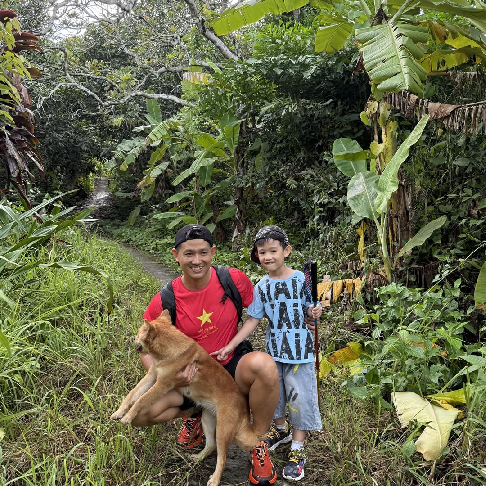
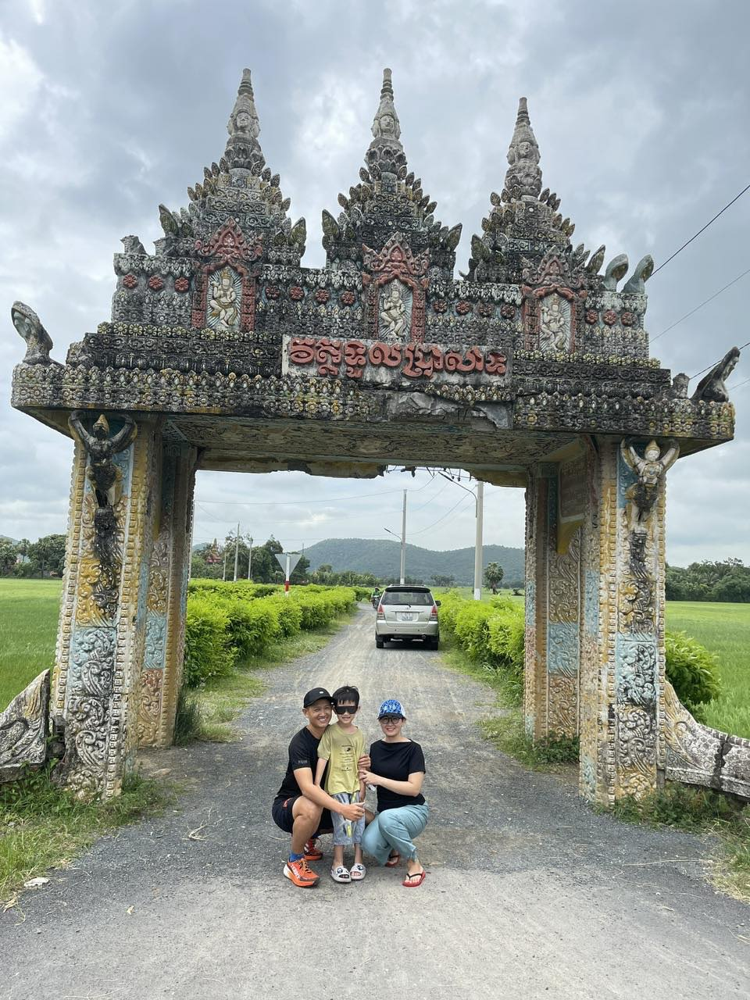

“Hãy luôn cho đi trước khi nhận — sống để tạo ra giá trị cho mình, cho người xung quanh và cho cộng đồng.”

Từ một hướng dẫn viên trên dòng Mekong đến Giám đốc Chi nhánh dẫn dắt đội ngũ 19 người, hành trình của Tài là câu chuyện của sự bền bỉ, ham học hỏi và khát vọng lớn. Anh tin rằng gia đình là nền tảng, con người là trung tâm, và công nghệ — đặc biệt là AI và các mô hình tự vận hành — là đòn bẩy để tạo ra giá trị vượt trội.
Một lộ trình kiên định: học sâu, làm thật, và xây dựng đội ngũ.
Những năm phổ thông tại quê hương An Giang.
Nền tảng ngôn ngữ và sư phạm.
Rèn luyện kỷ luật và bản lĩnh.
Một năm gắn bó với dòng sông và nghề du lịch.
Bước ngoặt khởi đầu sự nghiệp tại thành phố.
Sau một năm làm HDV chính, chuyển sang dẫn dắt đội kinh doanh.
Tốt nghiệp đứng nhất lớp.
Xây chi nhánh Long Xuyên từ 3 người (2019) lên 19 nhân sự (2026).
“Luôn cho đi trước khi nhận. Sống để tạo ra giá trị cho mình, cho người xung quanh và cho cộng đồng.”
Thích chia sẻ, kết nối con người và lan tỏa giá trị tới cộng đồng.
Tinh thần ham học hỏi, luôn cập nhật và hoàn thiện bản thân mỗi ngày.
Đặt gia đình làm gốc rễ cho mọi nỗ lực và khát vọng.
Tư duy tổ chức, thiết kế quy trình và mô hình vận hành.
Nuôi dưỡng đội ngũ, truyền cảm hứng và kiến thức.
Nghiên cứu công nghệ và automation để nhân giá trị.
Một tâm hồn yêu thiên nhiên và thích khám phá.
Một khát khao lớn — không chỉ là con số, mà là thước đo của giá trị tạo ra cho bản thân, đội ngũ và cộng đồng.

Với Tài, mỗi thành tựu đều bắt đầu và quay về từ tổ ấm — nơi tiếp thêm động lực cho những khát vọng lớn.